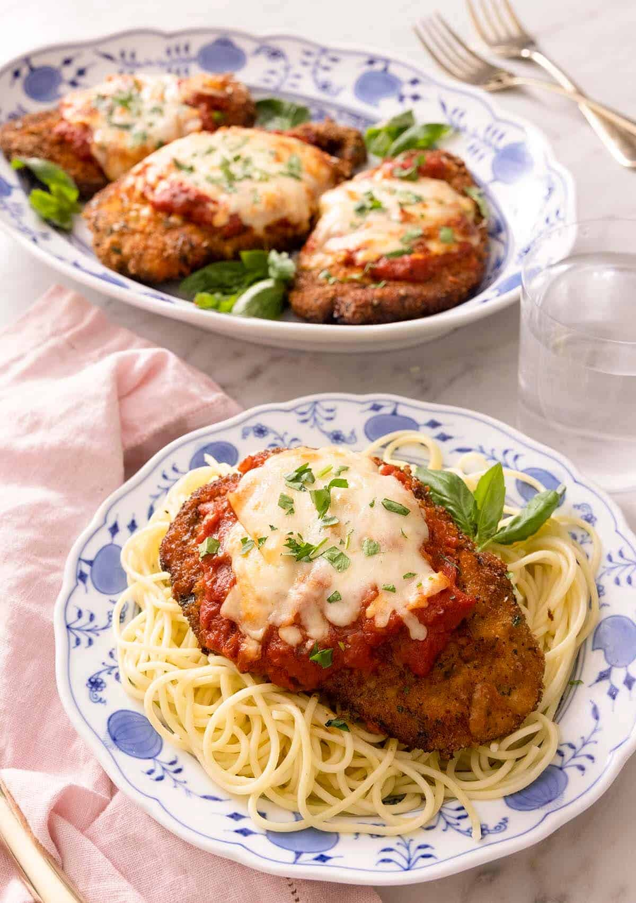

Chicken Parmesan

Easily one of the most iconic, classic Italian-American dishes!
Juicy chicken breast, sliced into thin, big cutlets and lightly fried to perfection are coated in marinara sauce
and topped with fresh mozzarella cheese, then baked to fused all the delicious flavors.
Use high-quality prepared marinara sauce for a better end result. You may substitute pesto or
dried Italian seasoning herbs of your choice for basil, or omit entirely. Best to use fresh mozzarella!
Ingredients
- 6 skinless, boneless chicken breast halves
- salt and freshly ground black pepper to taste
- 3 eggs
- 1 1/2 cups panko bread crumbs, or more as needed
- 3/4 cup grated Parmesan cheese
- 3 tablespoons all-purpose flour, or more if needed
- 1 1/2 cups extra virgin olive oil
- 1 jar of your favorite marinara sauce
- 8 oz fresh mozzarella cheese, sliced into 12 thin pieces
- 1 teaspoon Italian seasoning
- 2 tablespoon fresh basil, chopped
- 16 oz box of spaghetti
- 5 to 6 quarts of water
- 2 tablespoons of salt
Steps
- Preheat oven to 400 degrees F (205 degrees C)
- Boil water with salt in large pot.
- Place chicken breasts between two sheets of heavy duty
resealable freezer bag.
- Firmly pound with smooth meat mallet to a thickness of 1/2-inch. Season with salt and pepper.
- Beat eggs smooth in a shallow bowl.
- Mix bread crumbs and Parmesan cheese in a second shallow bowl.
- Place flour in a third shallow bowl.
- Dredge each filleted breast in the flour bowl and gently shake off excess.
- Then dip in the egg bowl and let the excess drip off.
- Then dredge on both sides in the bread crumbs bowl, gently pressing to coat completely.
- Heat 1 cup olive oil in a large skillet on medium-high heat until it begins to shimmer.
- Cook chicken until golden, about 2 minutes on each side.
- Transfer to baking sheet and top each breast with marinara sauce.
- Layer each chicken breast with equal amounts of mozzarella cheese, fresh basil, and provolone cheese.
- Sprinkle 1 to 2 tablespoons of Parmesan cheese on top and drizzle with 1 tablespoon olive oil.
- Bake in oven for 15 minutes until chicken is cooked to internal temperature of 165 degrees F.
- Place spaghetti in boiling water for 8-12 minutes, stir every 2 minutes.
- Drain spaghetti and served with Chicken Parmesan.